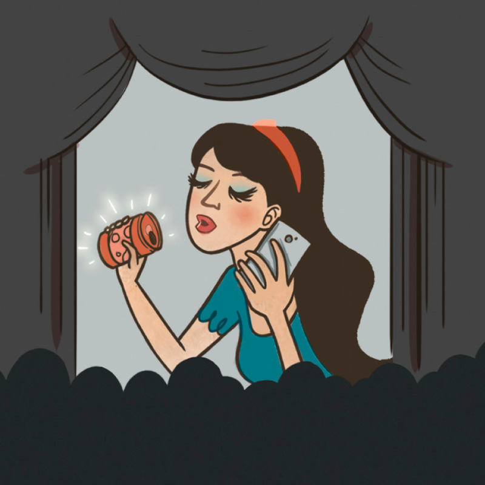

Recent Post
A Balanced View of Money
THERE is a saying, “Money makes the world go round.” There is some truth to that statement. After all, it takes money to buy food, obtain clothing, and pay for rent or buy a home. read more.
Popular Post


Why Do We Buy?
Even when a person has an abundance his life does not result from the things he possesses.”
In a global survey released in 2012, half the responders admitted to buying things they really did not need. Two thirds are worried that consumers are buying too much. Such concerns may be justified. Many consumers have become trapped in spiraling debt. Researchers say that instead of making us more satisfied, high levels of consumption may lead to greater stress and unhappiness! So, then, why are we buying so much?
AS CONSUMERS, we are subjected to a relentless barrage of marketing. What is the goal of marketers? To turn wants into needs. Marketers know that consumer behavior is driven largely by emotion. So advertisements and the shopping experience itself are designed for maximum emotional appeal.
The book Why People Buy Things They Don’t Need says: “In planning a new purchase, a consumer often develops elaborate fantasies surrounding search for an item, finding it, and making it their own.” Some experts suspect that buyers can get so excited while shopping that they may actually experience a rush of adrenaline. Marketing expert Jim Pooler explains: “If the retailer can sense this emotional state he can tap into it and take advantage of the customer’s elevated arousal level and weakened defenses.”
How can you protect yourself from becoming a victim of clever marketers? Put emotion aside, and compare marketing promises with reality.THE PROMISE: “Improve Your Quality of Life”
It is natural to want a better life. Advertisers bombard us with messages that all of our desires—better health, security, relief from stress, and closer relationships—can be achieved by making the right purchases.
REALITY CHECK:
As our number of possessions increases, our quality of life can actually decrease. Additional time and money are needed to care for more material things. Stress levels rise because of pressure from debt, and there is less time for family and friends.
As our number of possessions increases, our quality of life can actually decrease
Principle: “Even when a person has an abundance his life does not result from the things he possesses.”
THE PROMISE: “Gain Status and Prestige”
Few people will admit that they make purchases to impress others. However, Jim Pooler notes: “When people shop, a very important aspect of their behavior is that they are competing with friends, neighbors, coworkers and relatives.” For this reason, ads often show products being enjoyed by successful, affluent people. The message such ads send to consumers is: “This can be you!”
REALITY CHECK:
Defining our self-worth through comparison with others creates a never-ending cycle of dissatisfaction. When one level of aspiration is achieved, the next level immediately becomes desirable.
Principle: “A mere lover of silver will not be satisfied with silver.”
THE PROMISE: “Define Your Identity”
The book Shiny Objects explains: “A common way we tell others who we are (or would like to be) is through our use and display of material possessions.” Marketers know this and work to associate product brands—especially luxury brands—with specific lifestyles and values.
How do you see yourself, and how do you want others to see you? As stylish? As athletic? No matter what image you want, marketing promises that if you simply buy the right brand, you can adopt the brand’s identity as part of your own.REALITY CHECK:
No product purchase can change who we really are or give us admirable qualities, such as honesty and personal integrity.
Principle: “Do not let your adornment be . . . the putting on of gold ornaments or the wearing of outer garments, but let it be the secret person of the heart.”
A Balanced View of Possessions
Marketing promises rarely match reality. However, there is a reliable guide to living a balanced, happy life. All the principles cited in this article are found in the Bible, the Word of God. The Bible does not condemn owning material things but teaches that greater happiness comes from a way of life that is “free of the love of money.”—Hebrews 13:5.
Modern Marketing Methods
In addition to television, printed material, and Internet advertising, modern marketers use a growing number of sophisticated methods.

PRODUCT PLACEMENT: Products and brand names are subtly displayed in television shows, movies, and video games.
STEALTH MARKETING: Paid representatives enthusiastically use and talk to others about products in everyday settings without appearing to be sponsored to do so.
WORD-OF-MOUTH MARKETING: Advertising agents are encouraged to make comments about products to their friends and on social media networks. These agents may be given product samples or other rewards to motivate their participation.